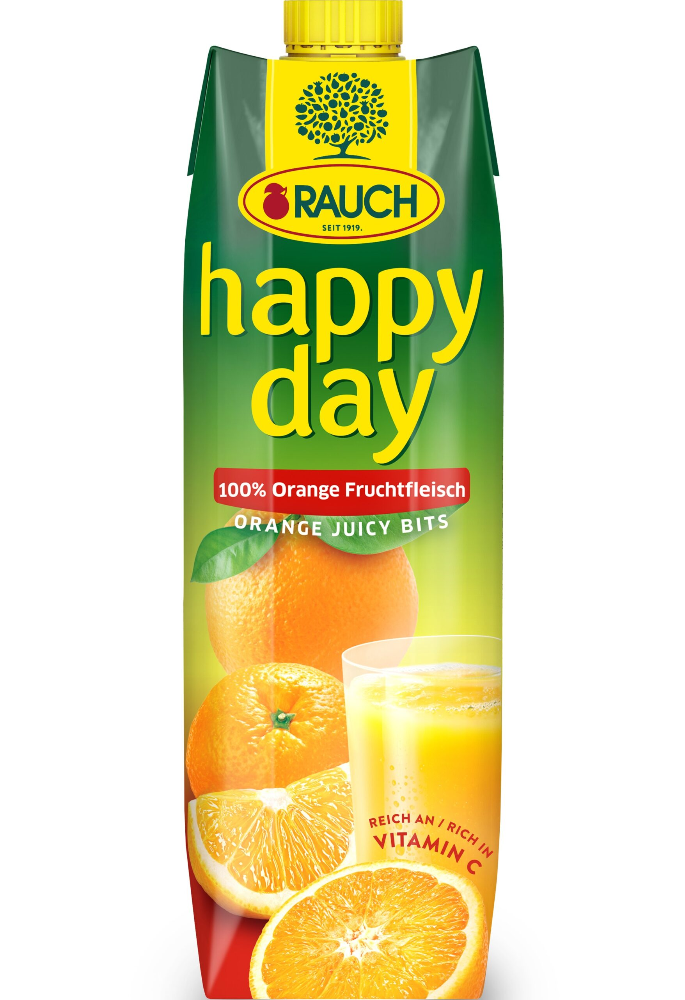
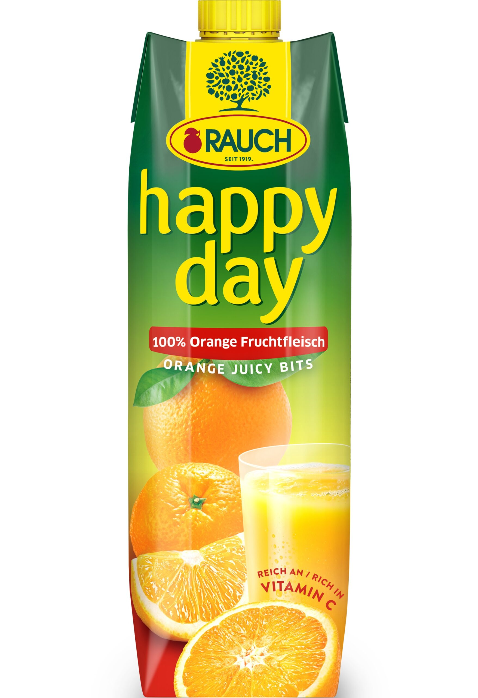

Sultys taip pat gali būti puikus būdas prisijungti prie sveikos mitybos, nes jos leidžia lengvai vartoti daugiau vaisių ir daržovių. Pasigaminti sultis namuose yra ne tik smagu, bet ir leidžia kontroliuoti, kokius ingredientus naudojate, kad gautumėte geriausią skonį. Sultys, pagamintos iš uogų, yra ypač populiarios, nes jos yra ne tik skanios, bet ir labai naudingos sveikatai. Sultys dažnai patiekiamos specialiuose induose, kad būtų suteikta estetinė vertė, o tai padidina malonumą gerti. Šviežios sultys gali būti derinamos su įvairiais priedais, pavyzdžiui, jogurtu ar avižomis, kad gautumėte maistingesnį gėrimą. Sultys yra puikus būdas pasilepinti ir mėgautis natūraliais skoniais, todėl jos visada turėtų būti mūsų mitybos dalimi!

 
